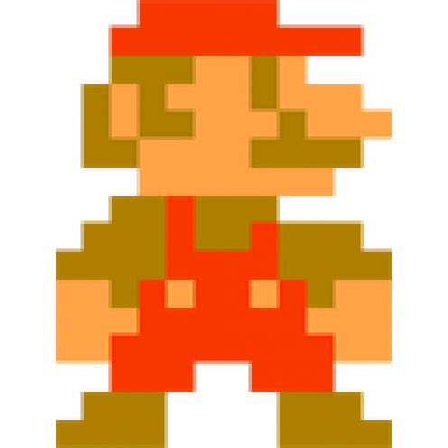
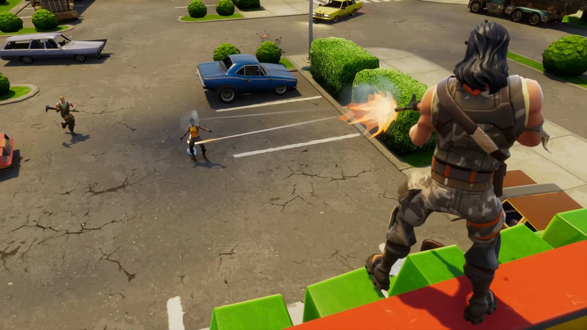

The game loop is the core structure that makes a game run. It is a repeating cycle that continuously updates the game and displays it on the screen. As long as the game is running, the game loop keeps going.
Without a game loop, a game would not respond to player input, update movement, or redraw graphics.
Why Is the Game Loop Important?
The game loop is important because it:
Keeps the game running smoothly
Processes player input (keyboard, mouse, controller)
Updates the game’s logic (movement, physics, AI)
Draws the updated game to the screen every frame
Almost every video game, no matter how simple or complex, uses some form of a game loop.
What Happens Inside a Game Loop?
A basic game loop usually follows these steps:
Handle Input
The game checks for player actions, such as pressing keys or moving a controller.
Update Game State
The game updates everything based on the input and time:
Player movement
Enemy behavior
Physics and collisions
Score and game rules
Render (Draw) the Game
The game redraws the screen with the updated positions, animations, and visuals.
This loop repeats many times per second, often 60 times per second (60 FPS).
Types of Game Loops
There are different ways to structure a game loop depending on the game and platform.
Fixed Time Step Loop
The game updates at a fixed rate (for example, 60 updates per second), no matter how fast the computer is.
This makes physics and movement more consistent, but it can be harder to implement.
Variable Time Step Loop
The game updates based on the amount of time that has passed since the last frame.
This is easier to implement, but movement and physics can feel inconsistent if frame rates change too much.
Many modern games use a hybrid approach, combining both methods for smoother gameplay.
Example of a Simple Game Loop (Pseudocode)
Here is a very simple example of how a game loop might look:
This loop continues running until the player quits the game or the game ends.
Frame Rate and Performance
The frame rate (FPS – Frames Per Second) determines how smooth a game feels.
30 FPS – Playable but less smooth
60 FPS – Smooth and common standard
120 FPS+ – Very smooth, used in high-performance games
A well-designed game loop helps keep the frame rate stable and prevents lag or stuttering.
Common Problems with Game Loops
Some common issues developers face include:
Lag or stuttering due to heavy calculations in the loop
Unstable physics caused by inconsistent time steps
Input delay if input is not handled correctly
Conclusion
The game loop is the heart of every video game. It controls how the game responds to player input, updates the world, and displays everything on screen. Understanding how the game loop works is a crucial first step for anyone interested in game development.
Once you understand the game loop, you can move on to more advanced topics like physics engines, animation systems, and game optimization.
Delta Time
What Is Delta Time?
Delta time (Δt) is the amount of time that has passed between two frames.
In games, delta time is used to make movement, animations, and physics behave consistently, even when the frame rate changes.
Instead of asking
“How many frames have passed?”
we ask
“How much time has passed?”
Why Is Delta Time Important?
Without delta time:
Faster computers → faster gameplay
Slower computers → slower gameplay
With delta time:
The game runs at the same speed on all devices
Movement feels smooth and fair
Physics behaves more predictably
The Problem Without Delta Time
Imagine a player moving 5 units per frame:
At 30 FPS → 150 units per second
At 60 FPS → 300 units per second
Same code, but completely different speed
The Solution: Delta Time
Instead of moving per frame, we move per second:
position += speed × deltaTime
Example:
This makes delta time a core part of the game loop, not an extra feature.
Common Problems with Delta Time
Very large delta times (lag spikes) can cause objects to jump
Physics can break if delta time is not limited
Many games clamp delta time to a maximum value
Example:
deltaTime = min(deltaTime, 0.05);
Conclusion
Delta time ensures that:
Games feel consistent
Movement is smooth
Performance differences don’t affect gameplay
Together with the game loop, delta time is one of the most important foundations of game programming.
Coordinate Systems
What Is a Coordinate System?
A coordinate system is a way to describe where something is using numbers.
In games, coordinate systems are used to define:
Player position
Enemy position
Camera position
UI element placement
If a game knows an object’s coordinates, it knows exactly where it is.
The Coordinate System most Already Know (2D Graph)
Yes, it’s basically the same one from math.
2D Coordinate System:
X-axis → left ↔ right
Y-axis → up ↔ down
Example:
(x, y) = (3, 2)
This means:
3 units to the right
2 units up
This is perfect for 2D games (platformers, top-down games).
Important Difference: Screen Coordinates vs Math Coordinates
Math Coordinate System:
(0,0) is in the center
Y increases upwards
Screen / Game Coordinate System:
(0,0) is usually in the top-left
Y increases downwards
This explains why “up” in games sometimes means subtracting Y.
Coordinates in Games (Practical Example)
Imagine a player at:
playerPosition = (100, 250)
X = 100 → 100 pixels from the left
Y = 250 → 250 pixels from the top
Move player right:
x += 5
Move player up:
y -= 5
Yes, up is negative Y. That’s normal in games.
3D Coordinate Systems
3D games add a third axis:
X → left / right
Y → up / down
Z → forward / backward (depth)
(x, y, z)
Used in:
FPS games
Open-world games
3D simulations
Coordinate Systems & the Game Loop
Coordinates are updated every frame inside the game loop.
Example:
position += velocity × deltaTime
This connects:
Game Loop
Delta Time
Coordinate Systems
Common Mistakes
Mixing up world coordinates and screen coordinates
Forgetting that Y goes downward
Moving objects per frame instead of per second
Conclusion
Coordinate systems allow games to:
Place objects precisely
Move them smoothly
Detect collisions
Control cameras and UI
Without coordinate systems, games could not exist.
Input Handling
Input handling describes how a game receives player input (keyboard, mouse, controller) and converts it into actions inside the game world.
Examples of player input are pressing "W" to move forward, Space to jump, or clicking the mouse to attack.
Basic Idea
At first glance, input handling may seem like a simple set of if-statements: Try it Yourself and Press W, A, S, D to Move the Red Dot
if(key == "w"){moveUp();}
if(key == "s"){moveDown();}
if(key == "d"){moveRight();}
if(key == "a"){moveLeft();}
See the pseudocode example for how not to do it
constredPoint = document.getElementById("red_point_to_move");conststep = 0.2;letx = parseFloat(redPoint.getAttribute("cx"));lety = parseFloat(redPoint.getAttribute("cy"));document.addEventListener("keydown", (event) => {// naive if-statement movementif (event.key === "w") {y -= step; }if (event.key === "s") {y += step; }if (event.key === "a") {x -= step; }if (event.key === "d") {x += step; }// only updates position on first key press, no hold or multiple keysredPoint.setAttribute("cx", x);redPoint.setAttribute("cy", y);});
While this works for very small programs, it quickly becomesimpractical in real games.
Games need smooth movement, multiple keys at once, key rebinding, pausing, and support for different input devices.
Problems you can see in the code above:
- No fluent movement
- Multiple keys pressed at once are not correctly handled.
- Input is directly tied to movement, making it hard to change behavior based on game state.
- No support for different input devices (controllers, mouse).
- Difficult to implement features like pausing or disabling input.
- Movement speed is not frame-rate independent.
- No separation between input detection and game logic.
- Hard to manage complex input schemes or combos.
- Not scalable for larger games with more actions.
- Lacks flexibility for future changes or additions.
- Does not account for delta time in movement calculations.
- Ignores context (e.g., player can't move while in a menu).
- No easy way to implement key rebinding or customizable controls.
- And likely many more issues.
How Input Handling Works in Practice
Modern games usually split input handling into three logical layers:
Raw Input – detecting which key or button was pressed
Input State – storing which inputs are currently active
Game Actions – using the input to control the game
1. Raw Input
Raw input is provided by the system or browser. At this stage,
the game only detects that a key was pressed or released.
No movement or actions happen here.
2. Input State
Instead of reacting immediately, the game stores the current
input state. This allows the game to know which keys are being
held down at any moment.
keys["w"] = true; // key is pressedkeys["w"] = false; // key is released
This makes it possible to handle multiple inputs at the same time,
such as moving diagonally or sprinting while moving.
3. Game Actions
The input state is checked every frame inside the game loop.
The game then decides which actions should be performed.
if (keys["w"]) {player.moveForward();}
Whether an action is allowed depends on the game state.
For example, the player may not be able to move while the
game is paused or while an animation is playing.
Why This Approach Is Important
Smooth and consistent movement
Multiple keys can be used at once
Easy to disable input (pause menus)
Supports key rebinding and controllers
Works correctly with delta time and the game loop
Summary
Input handling is not just reacting to a key press.
Instead, games record player input, track its current state,
and process it every frame to create responsive and flexible
controls.
Here is an example of how correct Input Handling would look like. Notice the fluent and stable movement
See the code used above for how to do it
2D graphics or images used in games or applications.
Typically used for characters, objects, or UI elements.
Can be static (single image) or animated (sequence of images).
Example: The player character in old Mario games.
Models
3D representations of objects, characters, or environments.
Defined by vertices, edges, and faces in 3D space.
Can be static or animated (e.g., walking animation).
Example: 3D characters in Minecraft or Fortnite.
Visual Idea: Show a side-by-side of a 2D sprite vs a 3D model of the same character.

Picutre of a 2d spritePicture of a 3d odel
2. How They Are Used
Sprites:
Platformer games (Mario, Sonic)
Top-down RPGs (Zelda, Pokemon)
Picture of a platformer game
UI icons and health bars
Particle effects (explosions, smoke)
Picture of game UI elements
Models:
3D games (FPS, RPGs)
VR/AR experiences
Simulations and animations

Picture of a 3d FPS gamePicture comparing a Sprite and a Model
3. Animation Basics
Sprites:
Frame-based animation (sprite sheet)
Flipbook-style → multiple images in sequence
Models:
Rigging: skeleton inside the model
Skinning: connecting model to the skeleton
Animations applied to bones (walk, run, jump)
4. Key Concepts / Terms
Texture: Image applied to model or sprite.
Frame: A single image in a sprite animation.
Rigging / Skeleton: Bones inside 3D model for animation.
Vertex / Edge / Face: Building blocks of 3D models.
Hitbox: Invisible shape used for collisions.
Labeled images displaying certain terms and key concepts mentioned in the text
5. Tools and Formats
Sprites:
Tools: Photoshop, Aseprite, Piskel
Formats: PNG, GIF, SVG
Models:
Tools: Blender, Maya, 3DS Max
Formats: OBJ, FBX, GLTF
Basic Logic
Basic Logic is the foundation of how games (and programs in general) decide what happens next. It’s about conditions, decisions, and consequences. It’s essentially teaching your game how to think.
What is Logic in Games?
In games, logic answers questions like:
Can the player jump right now?
Did the enemy see the player?
Is this door locked or unlocked?
Did the player win or lose?
Logic is not about graphics or sound. It’s about rules.
Conditions ("If this, then that")
At the heart of basic logic are conditions.
Examples:
If the player’s health is 0 → the player dies
If the key is collected → the door can open
If the player presses jump and is on the ground → jump
Think of conditions like yes/no questions your game constantly asks.
Boolean Logic (True / False)
Most decisions rely on booleans, which can only be:
true
false
Examples:
isGrounded = true
hasKey = false
enemyAlerted = true
These values control what actions are allowed.
Combining Conditions
Games rarely check just one thing.
Common logic combinations:
AND → all conditions must be true
OR → at least one condition must be true
NOT → reverses a condition
Examples in plain language:
Player can sprint if stamina > 0 AND sprint key is held
Alarm triggers if player is seen OR camera is hacked
Door opens if NOT locked
Game State
Logic often depends on the current state of the game.
Examples of states:
Menu
Playing
Paused
Game Over
Certain actions only work in certain states:
Player movement only works while Playing
Buttons behave differently in *Menu* vs Pause
This prevents bugs and unintended behavior.
Cause and Effect
Good logic follows clear cause-and-effect rules:
Player action → logic check → result
Examples:
Player shoots → ammo decreases → enemy takes damage
Timer reaches zero → logic triggers → round ends
This predictability is what makes games feel fair.
Why Basic Logic Matters
Without solid logic:
Controls feel unresponsive
Bugs appear everywhere
Systems break each other
With good logic:
Gameplay feels smooth
Rules are clear to the player
Complex systems become manageable
In Short:
Logic is the decision-making system of a game.
It controls:
What is allowed
When something happens
Why something happens
Every advanced game system (AI, physics interactions, combat, UI) is built on these simple logical rules.